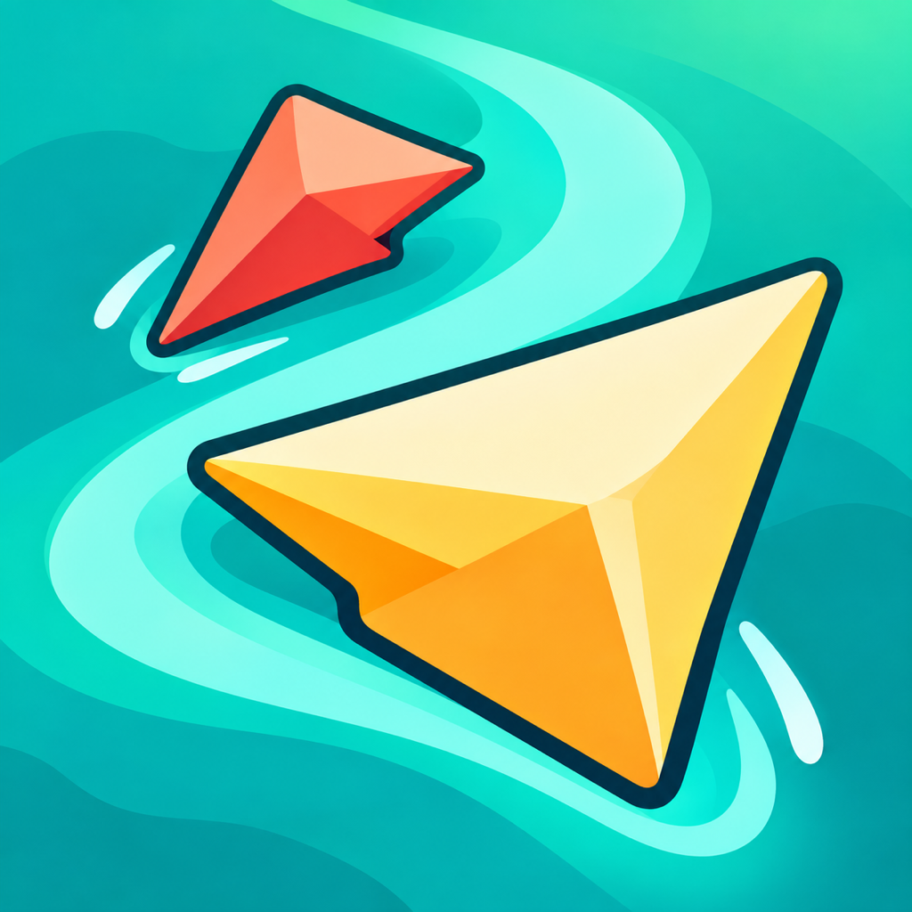
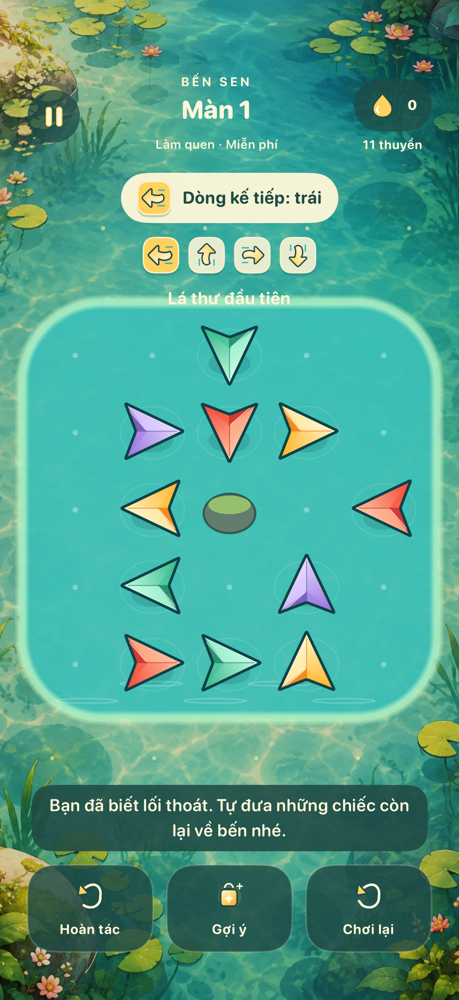
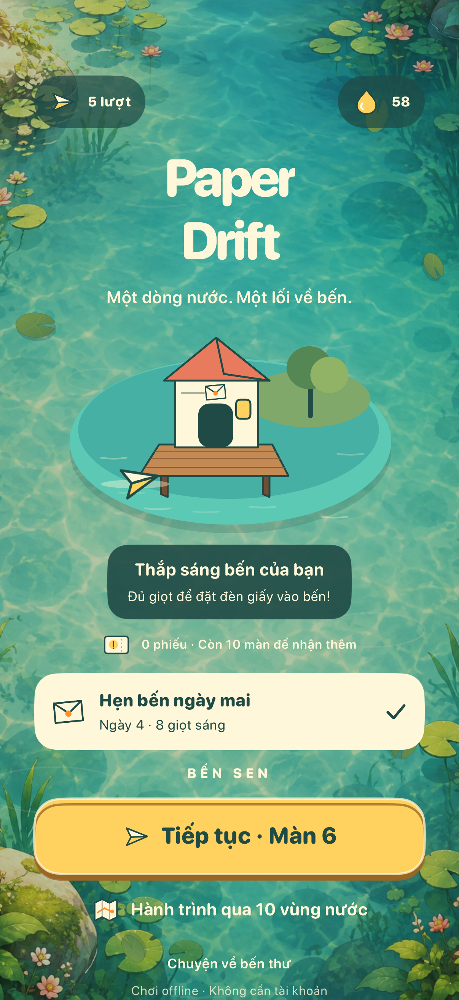

1.000 chuyến qua đầm
Bàn thuyền dày hơn, màn mở đầu có chỉ dẫn và một hành trình qua 10 vùng nước để khám phá theo từng lượt.

Một game nhỏ của Khanh Vu
Một dòng nước.
Một lối về bến.
Có một lá thư chưa tới nhà. Gấp một chiếc thuyền, đọc dòng nước và tìm lối đưa những lời thương qua đầm.
iOS 17+ · Bản hiện tại đang phát triển
Chưa có đường dẫn tải trên App Store.

Ảnh từ bản game đang phát triển.
Đọc hướng. Chọn lối. Thả trôi.
Mỗi chiếc thuyền chỉ đi thẳng theo mũi giấy. Khi một chiếc rời đầm, dòng nước đẩy những chiếc còn lại và đổi hướng. Lối thoát vừa mở có thể trở thành một bài toán mới.
Bàn thuyền dày hơn, màn mở đầu có chỉ dẫn và một hành trình qua 10 vùng nước để khám phá theo từng lượt.
Nhìn trước 4 hướng nước. Thuyền giấy, vệt nước và đèn soi đường giúp bạn theo dõi từng chuyển động.
Puzzle và tiến độ lưu offline. Bản hiện tại không cần tài khoản, không bật ads và có tuỳ chọn giảm chuyển động.
Bến vẫn chờ bạn
Nhận giọt sáng khi đưa thư tới bến, ghé lấy thư daily và thêm đèn giấy, sen nổi, chuông gió cho bến của mình. Mỗi món có một chút chuyển động, một tiếng chạm riêng.
Bản hiện tại lưu tiến độ trên thiết bị. Chưa có cloud sync hoặc khôi phục save từ phía nhà phát triển; xem thông tin hỗ trợ trước khi xoá app hoặc đổi máy.

FAQ giải thích gợi ý 8 giọt, phiếu hành trình, lượt hồi, daily và cách báo lỗi. Bạn có thể viết cho chúng tôi bằng tiếng Việt hoặc tiếng Anh.
An offline paper-boat puzzle for iOS. Send each boat out along its pointed direction, then plan around currents that shift the remaining boats. The current development build includes 1,000 levels, a dock to decorate and daily rewards, with no account, live ads or paid purchases. There is no App Store download link yet.